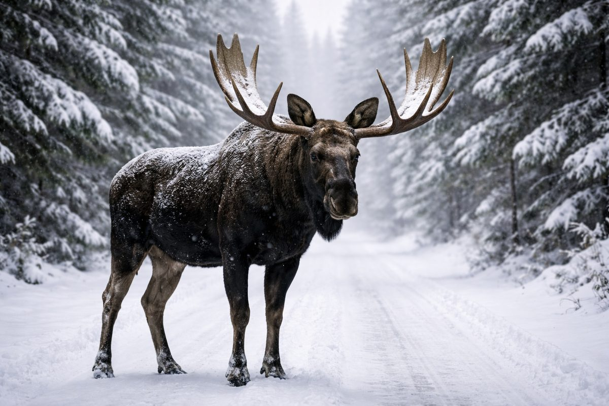

קנדה היא אחד היעדים הגדולים בעולם לצפייה בחיות בר, עם יותר מ-40 פארקים לאומיים ומאות פארקים פרובינציאליים.

קנדה היא אחד היעדים הגדולים בעולם לצפייה בחיות בר. עם כל כך הרבה טבע בתולי — יותר מ-40 פארקים לאומיים ומאות פארקים פרובינציאליים — המדינה היא בית למגוון מדהים של בעלי חיים, ציפורים וצמחים. לאוהבי הטבע ולחובבי פעילויות חוצות, קנדה היא גן עדן של ממש. ואפילו אם אתם מתיישבים בעיר, ייתכן שתופתעו לגלות כמה הטבע קרוב.
דוב הקוטב הוא אולי החיה האיקונית ביותר של קנדה. צ'רצ'יל שבמניטובה ידועה בתור "בירת דובי הקוטב של העולם", שם מתקבצים מאות דובי קוטב בכל סתיו בהמתנה לקפיאת מפרץ הדסון. מוזים נמצאים בכל רחבי המדינה והם כה גדולים עד שהם מהווים סכנת דרכים אמיתית באזורים רבים — במיוחד בשחר ובין הערביים. בין היונקים הגדולים האחרים ניתן למצוא דובי גריזלי ודובים שחורים, קריבו, זאבים, ביזונים (באזורים מוגנים) ויעלי הרים בהרי הרוקי.
עולם הציפורים של קנדה מרשים לא פחות. הצוללן — ציפור צוללנית בשחור-לבן עם קריאה מהפנטת ומהדהדת — הוא אחד הסמלים האהובים ביותר של קנדה ומופיע על מטבע הדולר הקנדי (המכונה בחיבה "לוני"). עיטים קרחים, אנפות כחולות גדולות, ברווזי קנדה, ינשופי שלג ומאות מיני ציפורים נודדות ניתן לצפות בהם ברחבי המדינה.
האוקיינוסים המקיפים את קנדה גם הם שופעי חיים. חוף האוקיינוס השקט הוא ביתם של אורקות (לווייתנים קטלנים), לווייתני גבנון, לוטרות ים וסלמון מהאוקיינוס השקט. חוף האוקיינוס האטלנטי תומך באוכלוסיות גדולות של לווייתני גבנון, כלבי ים אפורים והפאפין האטלנטי האיקוני. צפייה בלווייתנים היא פעילות תיירותית פופולרית בשני החופים.
קנדה מחויבת עמוקות לשימור הטבע. המדינה השקיעה מאמצים משמעותיים בהגנה על יערות עתיקים, מסדרונות חיות בר ואזורים ימיים מוגנים. שינויי האקלים מהווים דאגה מרכזית, שכן הם משפיעים במיוחד על המערכות האקולוגיות וחיות הבר הארקטיות של קנדה. קהילות ילידיות רבות הן מנהיגות פעילות בתחום השמירה על הסביבה, תוך שילוב ידע מסורתי עם מדע מודרני.
יועצי ההגירה המורשים שלנו כאן כדי להדריך אתכם בכל שלב בדרך.